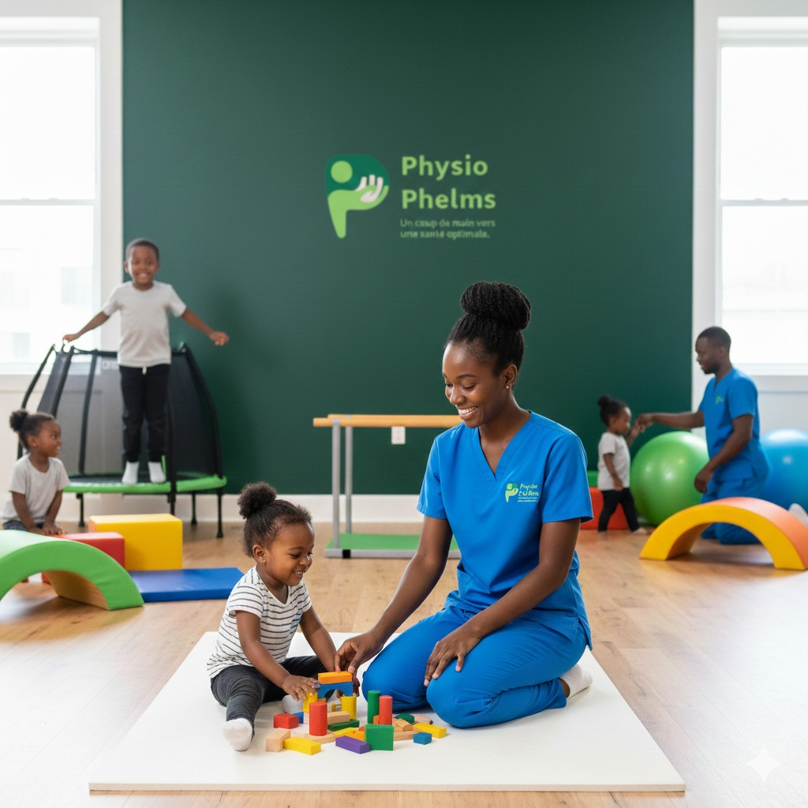
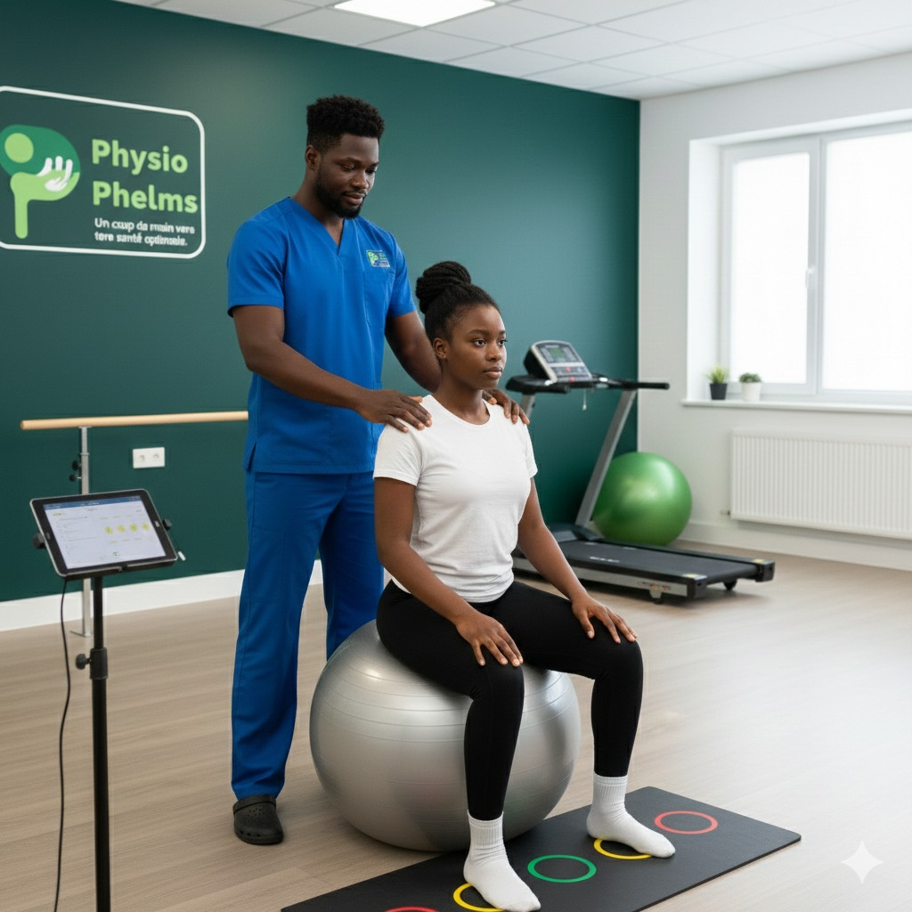
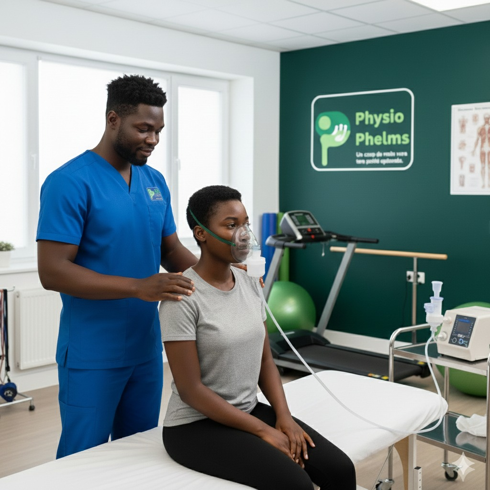
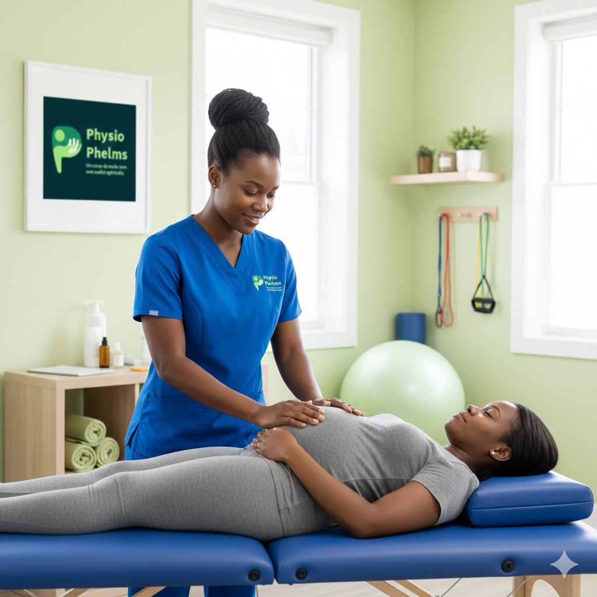
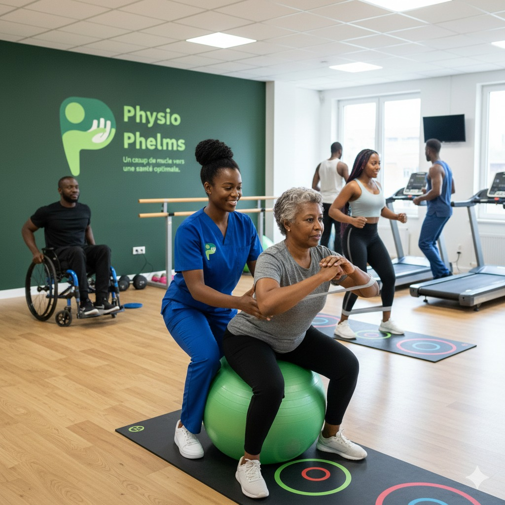
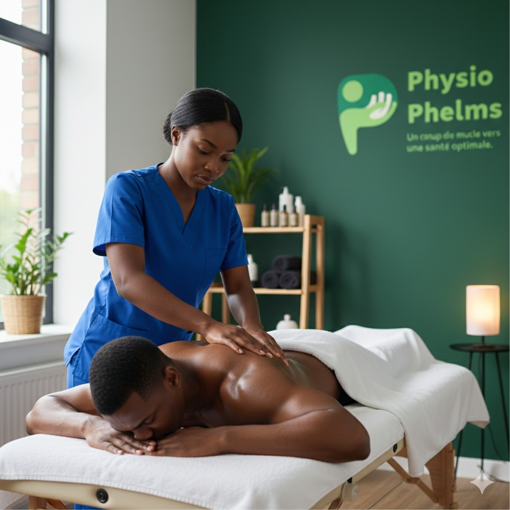
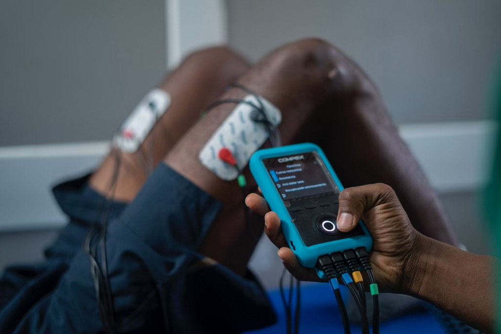
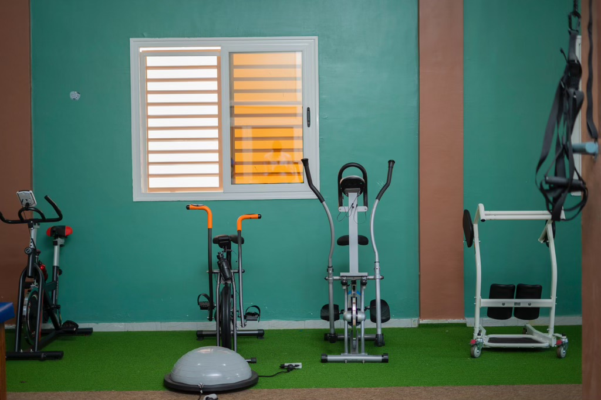
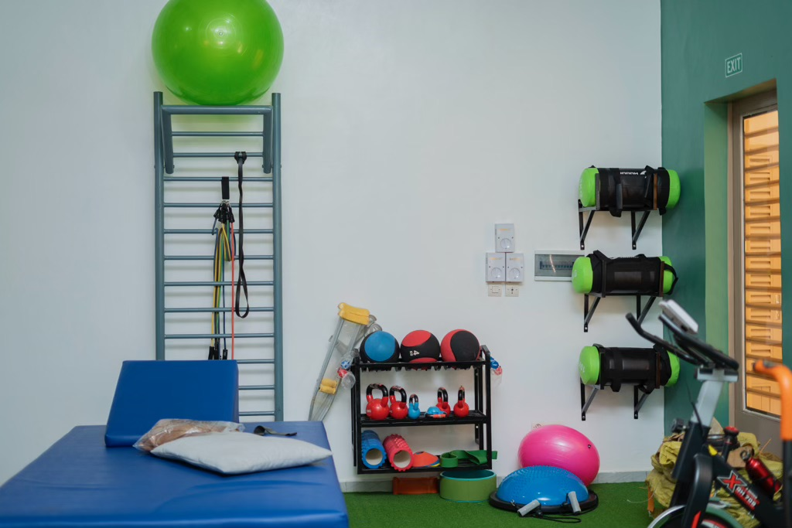

Site en maintenance
Nous effectuons actuellement une mise à jour. Le site sera de nouveau disponible très prochainement. Merci de votre patience.

Un coup de main vers une santé optimale
Une gamme complète de services de physiothérapie pour répondre à tous vos besoins de santé et de bien-être.

Traitement complet pour troubles musculo-squelettiques et rééducation fonctionnelle. Nous traitons les douleurs dorsales, cervicales...
Traitement complet pour troubles musculo-squelettiques et rééducation fonctionnelle. Nous traitons les douleurs dorsales, cervicales, articulaires et musculaires.

Soins spécialisés pour personnes âgées, maintien de l'autonomie et prévention des chutes. Amélioration de la qualité...
Soins spécialisés pour personnes âgées, maintien de l'autonomie et prévention des chutes. Amélioration de la qualité de vie des seniors.

Accompagnement du développement moteur et traitement des troubles chez l'enfant. Prise en charge adaptée aux besoins...
Accompagnement du développement moteur et traitement des troubles chez l'enfant. Prise en charge adaptée aux besoins spécifiques des plus jeunes.

Rééducation après AVC, traumatisme crânien, sclérose en plaques et autres pathologies neurologiques. Récupération des...
Rééducation après AVC, traumatisme crânien, sclérose en plaques et autres pathologies neurologiques. Récupération des fonctions motrices.

Amélioration de la fonction respiratoire et traitement des troubles pulmonaires. Techniques de désencombrement et...
Amélioration de la fonction respiratoire et traitement des troubles pulmonaires. Techniques de désencombrement et rééducation respiratoire.

Accompagnement pré et post-natal, rééducation périnéale et préparation à l'accouchement. Suivi personnalisé pour...
Accompagnement pré et post-natal, rééducation périnéale et préparation à l'accouchement. Suivi personnalisé pour les futures et jeunes mamans.

Prévention et traitement des blessures sportives, optimisation des performances. Accompagnement des sportifs de...
Prévention et traitement des blessures sportives, optimisation des performances. Accompagnement des sportifs de tous niveaux.

Programmes personnalisés pour diabète, hypertension artérielle et obésité. Exercices adaptés aux pathologies...
Programmes personnalisés pour diabète, hypertension artérielle et obésité. Exercices adaptés aux pathologies chroniques.

Techniques de massage pour soulagement de la douleur et relaxation musculaire. Approche holistique du...
Techniques de massage pour soulagement de la douleur et relaxation musculaire. Approche holistique du bien-être.
Notre centre dispose d'équipements de pointe et d'espaces spécialement conçus pour offrir les meilleurs soins de physiothérapie dans un environnement confortable et professionnel.
Visiter notre centre






Contactez-nous pour discuter de vos besoins spécifiques et trouver le traitement le plus adapté.